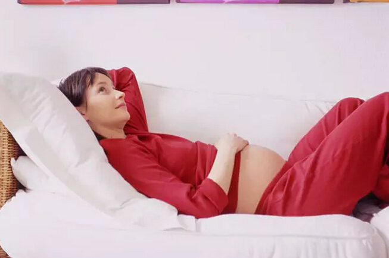

孕妇六个脆弱部位，孕期须特别关注
怀孕的过程是一个生理变化非常大的过程，不管是内在或外在都会发生各种的变化。孕妈要正确地认识身体有些部位可能发生的变化，并且在日常生活中加倍呵护，就能当一个既漂亮美丽又健康的孕妈咪啦~(�R���Q)/~
原因：怀孕后对牙齿的护理要比平常更为重要。怀孕后体内的激素变化可能会使你的牙龈轻微的肿胀，从而使它在刷牙时更容易出血，另外也使其对细菌更为敏感。
关照措施：
❤ 至少每天刷牙两次，确保每次刷牙时间为三分钟，并且最好在饭后进行。
❤ 要使用保健牙刷，最好是软毛的，这样才能避免牙龈出血；每三个月要更换牙刷。
❤ 选用含氟、能抑制细菌的牙膏。尽量避免使用含有药物成分的牙膏以及品质不好的杂牌牙膏。
❤ 饭后零食后漱口，使用牙线去除牙齿邻面的牙菌斑和食物残渣。
原因：在怀孕40天左右的时候，由于胎盘、绒毛大量分泌雌激素、孕激素、催乳素，致使乳腺增大，而产生乳房胀痛，怀孕3~4个月，大部分人乳房已开始变大，除了轻微疼痛，偶而还会摸到肿块。另外，乳房表皮正下方会持续出现静脉曲张，乳头颜色也会变得更深。
关照措施：
❤ 要用有足够承托力的内衣，但不要紧压乳头。如果你预备用母乳哺乳，应从孕期就开始呵护乳房，这样才能在分娩后成功进行母乳喂养。
❤ 经常用温和皂水擦洗乳晕和乳头皮肤，并将皮肤皱褶处擦洗干净。这样做的主要目的是保持乳房卫生，还可使皮肤逐渐变得结实耐磨，日后经得起宝贝吸吮。
❤ 洗浴后正确按摩乳房。每次清洗乳晕和乳头后，用热毛巾敷乳房并用手轻轻地按住，用手指腹在乳房周围以画圈方式轻轻按摩；拇指和食指压住乳晕边缘，再用两指轻轻挤压。
❤ 睡眠时注意采取适宜睡姿，俯卧位容易使乳房受到挤压，使血液循环不通畅，不能保证促使乳腺发育的激素运送，从而影响乳腺发育。
❤ 在28~36周不需使用润肤乳，初乳出现后孕妈咪可在沐浴之后，挤出少量乳汁，涂在乳头周围皮肤上。干后会形成薄膜，它的滋润效果比任何护肤品都好。

原因：约有一半至3/4的孕妈咪在怀孕的某些时期都有腰疼的经历，只有1/3的孕妈咪会严重影响到生活。孕期腰部不适的原因主要是由于身体在为生产做准备，身体各部位的关节都会比原来更加松弛，并且由于腹部增大，重心前移使你的身体平衡发生变化，更加重了腰部的负担。
关照措施：
❤ 当站立的时候要调整姿势以代偿重心的改变，双肩收紧，收紧腹部，将骨盆轻微前移。
❤ 坐着的时候后背要有好的支撑，并且膝盖的高度要略微高于大腿。
❤ 睡觉时最好侧卧，选择硬一点儿的床垫，在两腿之间和肚子下面垫上枕头或靠垫以支撑背部。
❤ 在搬东西时将双脚分开同肩宽，将膝盖弯曲而不是将腰弯曲，站立时大腿用力而不是腰用力。
❤ 尽量避免穿高跟鞋，如果出现腰部不适，可以在局部疼痛的地方热敷或者按摩。
原因：怀孕后腿部的不适主要是腿脚的肿胀以及腿部的抽筋现象。在怀孕的过程中，由于孕期激素水平的变化和血液循环系统对怀孕的适应，孕妈咪的体液增加；另外到了中后期，由于子宫变大，压迫到静脉，以致静脉血回流变慢，积压在血管中的液体滞留在身体末梢，就会造成水肿。
孕妈咪在孕期体重逐渐增加，双腿负担加重，腿部的肌肉经常处于疲劳状态；另外，怀孕后，对钙的需要量明显增加，所以很多孕妈咪会因为缺钙发生抽筋现象。夜间血钙水平比日间要低，故小腿抽筋常在夜间发作。
关照措施：
❤ 坐着工作时，在脚下垫个矮凳；躺着时，尽量左侧平卧；平常坐着时，不要翘二郎腿，要常常伸展腿部，动动脚跟、脚趾、旋转脚踝关节，以伸展小腿肌肉。
❤ 不要长时间坐或站，常常走一走、动一动，以增加下肢血流。
❤ 穿着让胀大的脚感到舒适的鞋子，不要穿会压迫到脚踝及小腿的附有松紧带的袜子。
❤ 为了避免腿部抽筋，需注意不要使腿部的肌肉过度疲劳。不要穿高跟鞋。睡前可对腿和脚进行按摩。
❤ 平时要多摄入一些含钙及维生素D丰富的食品，如牛奶、骨头汤。适当进行户外活动，接受日光照射，必要时可加服钙剂和维生素D。
❤ 在怀孕期间做一些腿部肌肉的伸展运动，多散步，增加肌肉对钙质的吸收也是至关重要的。
原因：怀孕后，由于激素的影响，以及怀孕后阴道充血、腺体分泌旺盛、外阴湿润等原因，很多孕妈朋友会有阴部瘙痒的症状，这时应该及时去医院就诊，确定引起阴部瘙痒的原因，然后再用药治疗。多数孕妈咪的这个症状是没有病理性原因的，需要在孕期中倍加注意，维护阴道的健康。
关照措施：
❤ 保持外阴清洁、干燥，勤换内裤，外阴用具专人专用，用过的内裤、毛巾、盆均应用开水烫洗，太阳下暴晒而非晾晒。
❤ 内衣柔软宽松，以棉织品为好。避免羽绒、尼龙及毛织品衣服贴身穿戴，避免内裤与袜子同洗。不穿化纤内裤及牛仔裤。
❤ 怀孕后外阴的冲洗是允许的，但是绝对不能进行阴道的冲洗。
原因：怀孕后增加的血液循环、升高的基础体温以及改变了的激素水平都会使你的皮肤让人感觉光彩照人，并且质地弹性也会较怀孕前好得多。但是，这时的皮肤也会更加敏感，许多孕妈咪的皮肤会变得更干或者更油，有的还会有“青春痘”出现，有的会在面颊部出现褐色的“妊娠斑”，还有很多孕妈咪在肚皮和大腿处出现妊娠纹，这些改变都是正常的，也是可以通过精心的呵护来避免或者减轻的。
关照措施：
❤ 在怀孕的过程中要将你每天的护肤程序作微小的调整：你每天至少洗脸1次，最好用不含皂性成分的洗面产品，因为皂性成分对怀孕的皮肤来说作用太强烈会夺走皮肤的正常油脂。同时要选择滋润性好的面霜。
❤ 减少腹部妊娠纹，怀孕前应注意适当的锻炼，增加腹部肌肉和皮肤的弹性。怀孕后注意适当控制体重增长的速度。
❤ 孕期应多吃富含维生素C的食物，如柑橘、草莓、蔬菜等，还应多吃富含维生素B6的食物，牛奶及其制品。
❤ 各种外用的用于滋润皮肤的各种护肤品、按摩霜也能起到一定的辅助作用。
❤ 橄榄油、强生的BB油、维生素E以及妊娠按摩霜，可以在怀孕前就开始使用，以减缓妊娠纹产生的过程，但是并不能治疗妊娠纹。这种外用的按摩制剂基本上不会对宝贝造成影响，可以放心使用，并且最好在沐浴后立刻使用，并做一段时间的按摩运动，使这些产品被很好地吸收，才能达到最好的效果。